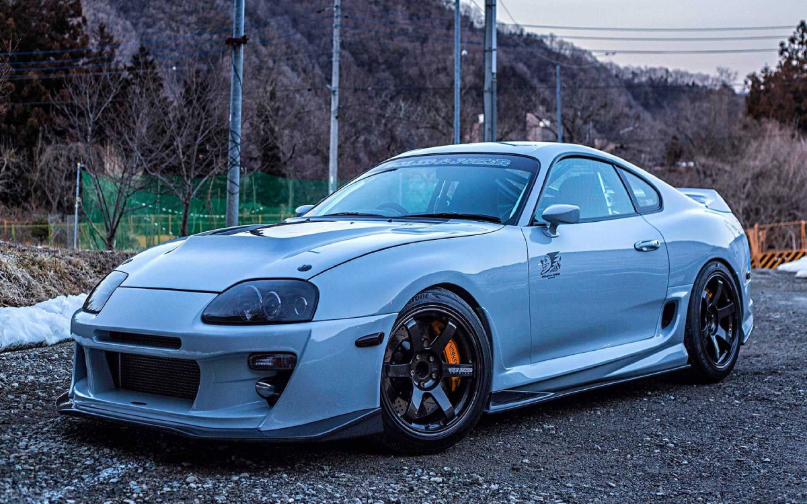
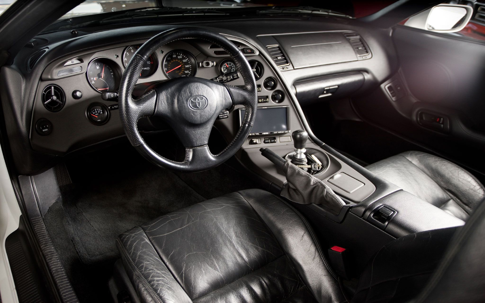
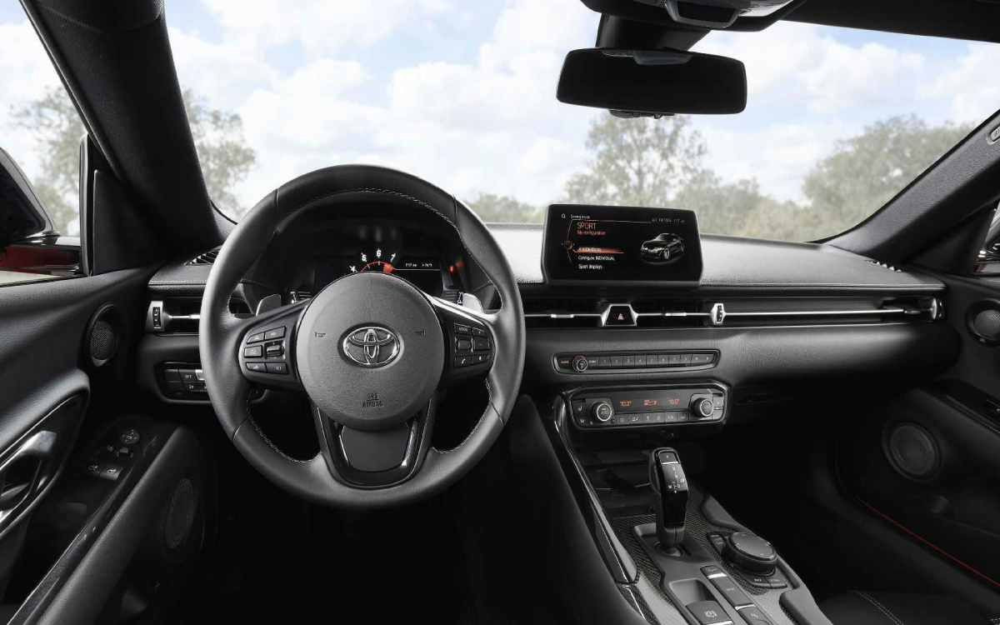

|
Toyota supra mk4
|
61.000€ | |||||||||
|---|---|---|---|---|---|---|---|---|---|---|
|
La Toyota Supra MK4 è un'icona sportiva giapponese degli anni '90, con design aerodinamico, motore turbo e
prestazioni eccezionali. Una leggenda delle auto ad alte prestazioni.
|
 | |||||||||
|
|
 |  | ||||||||